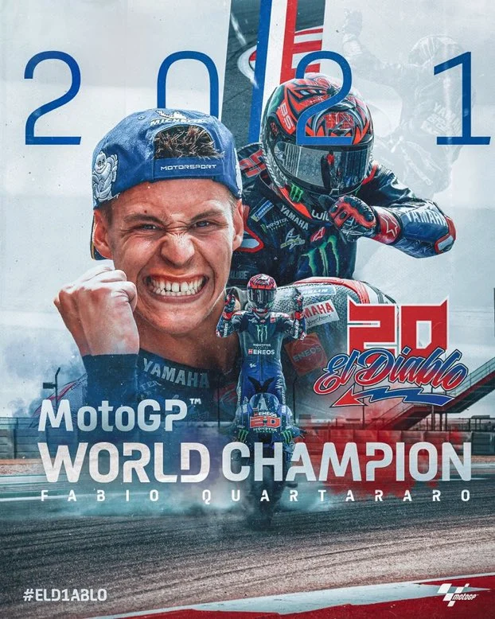

Fabio Quartararo
2021 MotoGP World Champion

MotoGP World Champion Wallpaper
Fabio Quartararo (born 20 April 1999) nicknamed El Diablo, is a French Grand Prix motorcycle rider racing in MotoGP for Monster Energy Yamaha MotoGP. Having won the 2021 MotoGP World Championship, he is the reigning title holder, and is the first French World Champion in the premier class' history.